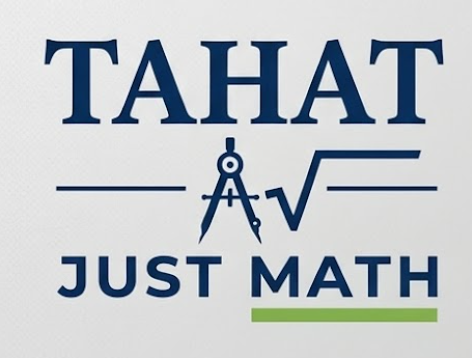

Technical Mathematics
Course Curriculum Directory
Choose an available chapter to open its interactive lessons, tools, and question bank.

Chapter 13: Trigonometry & Right Triangles Question Bank · 427 questions
Choose an available chapter to open its interactive lessons, tools, and question bank.
Tahat Just Math · Self-paced practice
Test questions, verify solutions step-by-step, and monitor live metrics.
Every right triangle has three sides. The hypotenuse is fixed by the right angle; opposite and adjacent are named relative to the chosen acute angle.
\(\sin(\theta)=\frac{\text{opposite}}{\text{hypotenuse}}\)
\(\cos(\theta)=\frac{\text{adjacent}}{\text{hypotenuse}}\)
\(\tan(\theta)=\frac{\text{opposite}}{\text{adjacent}}\)
When the side lengths are known, choose the inverse ratio that matches the given sides.
\(\theta=\sin^{-1}\left(\frac{\text{opposite}}{\text{hypotenuse}}\right)\)
\(\theta=\cos^{-1}\left(\frac{\text{adjacent}}{\text{hypotenuse}}\right)\)
\(\theta=\tan^{-1}\left(\frac{\text{opposite}}{\text{adjacent}}\right)\)
First mark the known angle and label the sides opposite, adjacent, and hypotenuse. With an angle and one side, use SOH–CAH–TOA. With two side lengths, use the Pythagorean theorem. In the formulas below, replace \(A\) with \(B\) when angle B is given.
If the missing side is the middle letter in the rule, multiply the known side by the trig ratio.
\(\text{opposite}=\text{hypotenuse}\cdot\sin(A)\)
\(\text{adjacent}=\text{hypotenuse}\cdot\cos(A)\)
\(\text{opposite}=\text{adjacent}\cdot\tan(A)\)
If the missing side is the last letter in the rule, divide the known side by the trig ratio.
\(\text{hypotenuse}=\frac{\text{opposite}}{\sin(A)}\)
\(\text{hypotenuse}=\frac{\text{adjacent}}{\cos(A)}\)
\(\text{adjacent}=\frac{\text{opposite}}{\tan(A)}\)
Add leg squares when finding the hypotenuse \(c\). Subtract the known leg square when finding a missing leg.
\(c=\sqrt{a^2+b^2}\)
\(a=\sqrt{c^2-b^2}\)
\(b=\sqrt{c^2-a^2}\)
The angle measured upward from a horizontal line of sight to a point above the observer.
For height \(h\) and horizontal distance \(d\): \(h=d\tan(\theta)\).
The angle measured downward from a horizontal line of sight to a point below the observer.
Use the equal interior angle at the base of the triangle to choose a trigonometric ratio.
Find a missing side in a right triangle. Enter positive lengths; the hypotenuse must be longer than either leg.
Rewrite a square root in simplest exact form and compare it with its decimal value.
In a right triangle, the hypotenuse c is opposite the right angle. If a leg is missing, isolate it before taking a square root.
\(a^2+b^2=c^2\), so \(a=\sqrt{c^2-b^2}\).
To simplify a radical, factor out the largest perfect square: \(\sqrt{50}=\sqrt{25\cdot2}=5\sqrt{2}\).
Adjust either leg to see the hypotenuse, reference angle, and trigonometric ratios update.
Use side patterns to find exact ratios without a calculator.
The hypotenuse stays the same. Opposite and adjacent depend on which acute angle you choose.
Angle A selected: side a is opposite and side b is adjacent.
Use the ratio that contains the side you know and the side you need.
Recognize these side patterns to find exact values without a calculator.
Both legs have the same length.
The short leg is opposite 30°; the hypotenuse is twice the short leg.
| Ratio | 30° | 45° | 60° |
|---|---|---|---|
| Sine | \(\frac{1}{2}\) | \(\frac{\sqrt{2}}{2}\) | \(\frac{\sqrt{3}}{2}\) |
| Cosine | \(\frac{\sqrt{3}}{2}\) | \(\frac{\sqrt{2}}{2}\) | \(\frac{1}{2}\) |
| Tangent | \(\frac{\sqrt{3}}{3}\) | \(1\) | \(\sqrt{3}\) |
Choose an objective to open its question set. Use each question’s hint and step-by-step solution controls as needed.
Choose a ratio, enter two known values, and solve for an angle or side. Angles are in degrees.
Enter any two positive side lengths and leave the third blank. The calculator uses the Pythagorean theorem, then reports the selected ratio and the reference angle.
Use exact values when possible and round only when the question asks for an approximation.
The Chapter 13 bank contains 427 questions across all learning objectives. Generate a fresh quiz with a random selection of questions, or use the full assessment to answer every question.
Practice one skill at a time, or use the full assessment above to review the entire chapter.
Review your score and send your results directly to your instructor.